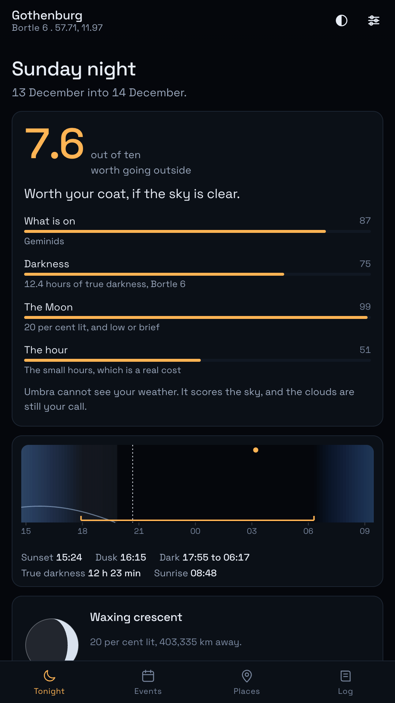
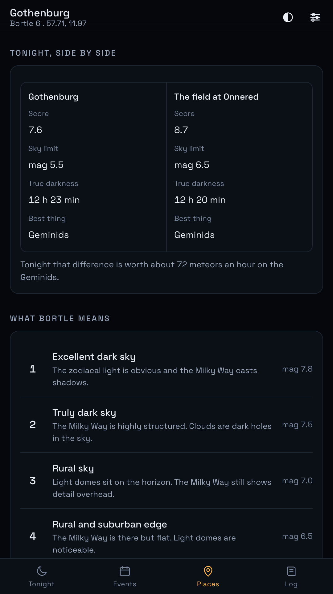
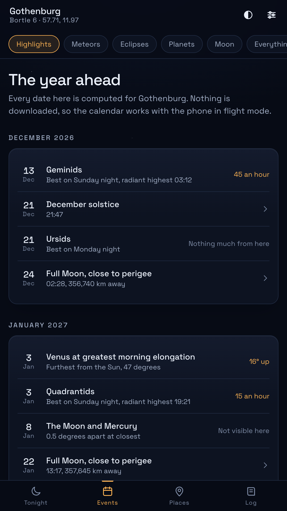
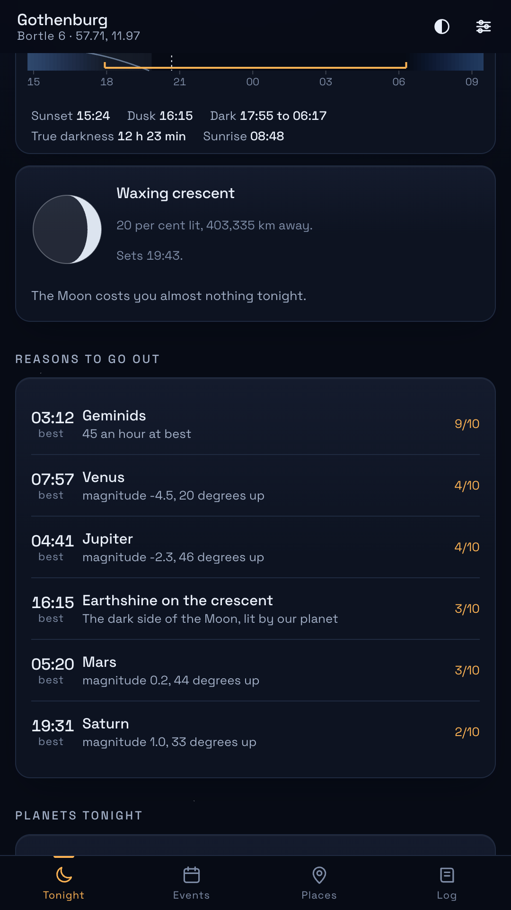
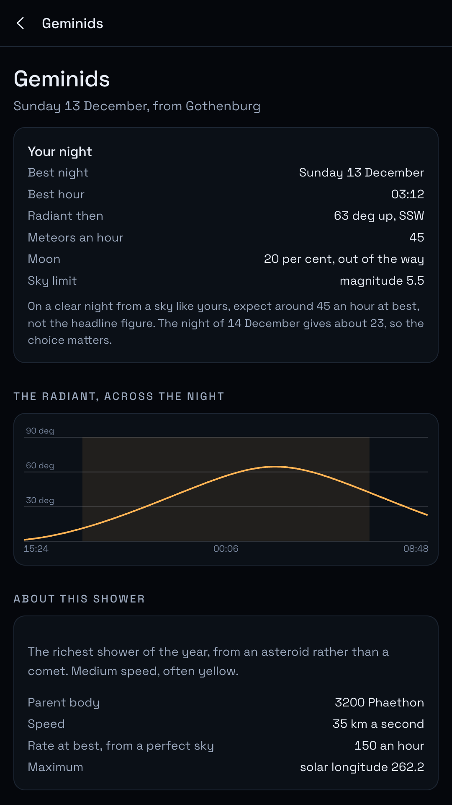
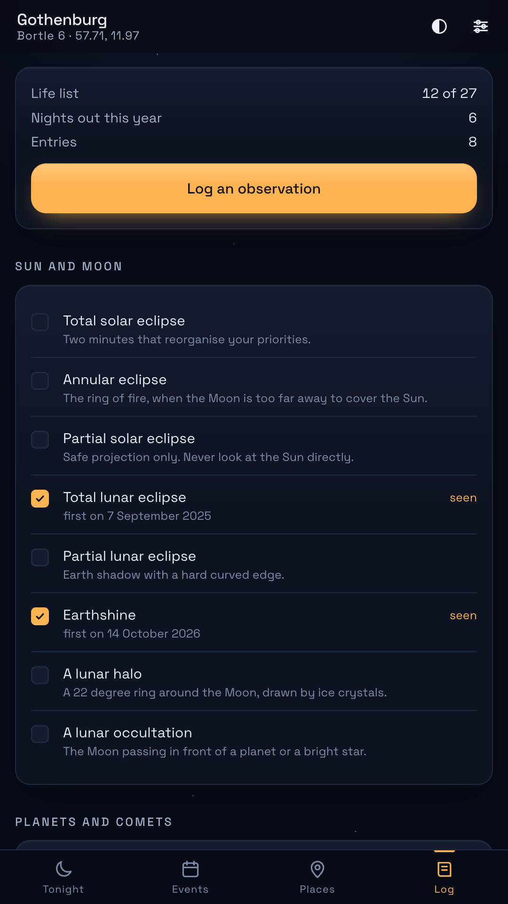
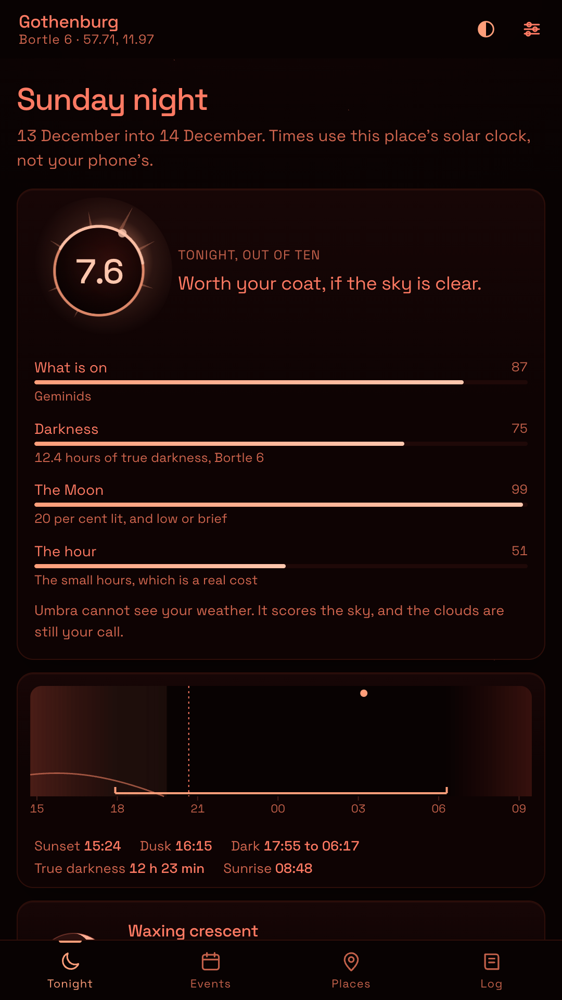

Know whether tonight is worth going outside for.
An offline sky almanac for Android. It works out your darkness, your moonlight, your meteor rates and your eclipses, then gives you one number and shows how it got there.
Open it in your browserFree. No account, no adverts, nothing to buy, and no network permission.
The one number
Every night gets marked out of ten for your place: what is actually on, how many hours of true darkness you get, what the Moon is doing to them, and whether the good hour is a civilised one.
All four components are on screen with the score, in plain language, because a number you cannot argue with is a number you stop trusting. A Geminid peak from a suburban garden reads differently from the same night at a dark site, and Umbra says so.
It also says what it cannot see. There is no weather in here, and the app never pretends otherwise.

Sun, Moon and planet positions from the standard published series, computed on the phone in a few milliseconds. Rise, set and twilight are solved, not looked up.
Twenty three streams from the IMO working list, run through the rate formula with your radiant altitude, your light pollution and tonight's Moon. Usually a smaller number than the headline, and a true one.
Solar and lunar, with the times, the magnitude and the altitude from where you stand, plus a warning when you are close enough to the edge of a path to need a proper map.
Sunset, the three twilights, moonrise and the window of true darkness, drawn as one strip you can read at a glance before you commit an evening.
Twenty seven things worth seeing once, from a total eclipse to noctilucent clouds, with your log attached and the conditions of the night recorded automatically. The whole lot exports as one file, and imports again on a new phone.
The whole app in red, so twenty minutes of dark adaptation survives a glance at your phone. It can switch itself on after dusk.

Add the field you sometimes drive to, tell Umbra how dark it is, and it puts the two skies side by side for tonight: the score, the faintest star you should see, the hours of darkness, and what the difference is worth in meteors an hour.
Some nights that is sixty extra meteors. Some nights it is four, and you may as well stay in the garden. The app is happy to tell you the second thing.
Meteor peaks, eclipses, oppositions, greatest elongations, close conjunctions and the turns of the year, each dated for your longitude and rated for your latitude. Umbra will happily tell you that a famous shower is worth nothing from where you live.
Because it is all computed rather than fetched, the calendar works in a field with no signal, on a plane, or in five years when nobody is maintaining a server.

The honest part




It would rather stay silent than waste your evening.
You set the score at which a night is worth telling you about, and Umbra starts that bar where your own sky can actually reach, measured over a year from your coordinates. Then it holds to it: one notification a day at most, nothing at three in the morning, and no alert it cannot stand behind.
The Android app is the same code you can run right here, in a browser tab, with nothing to sign up for.
Open it in your browser